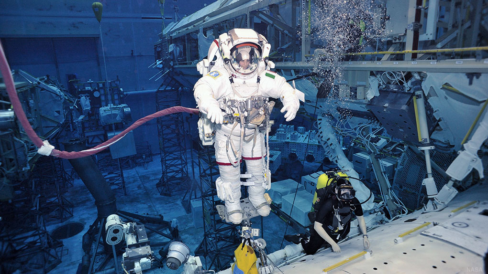
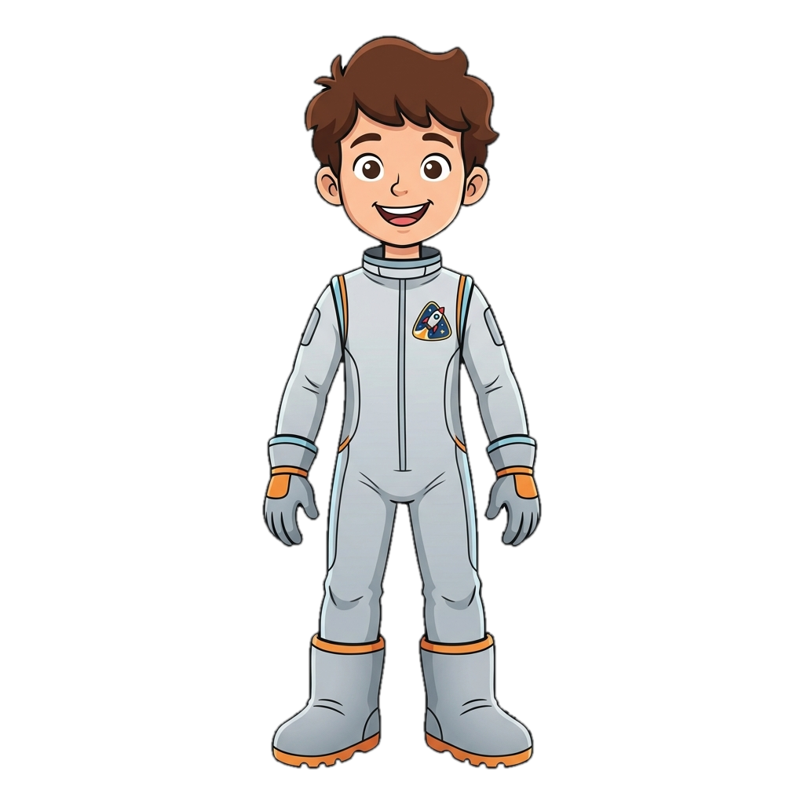
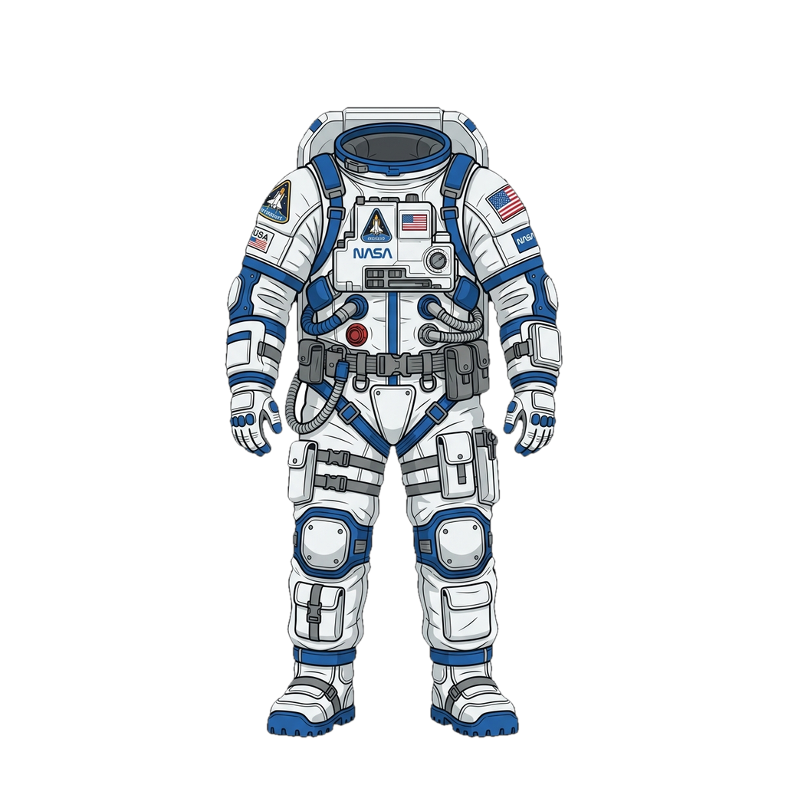
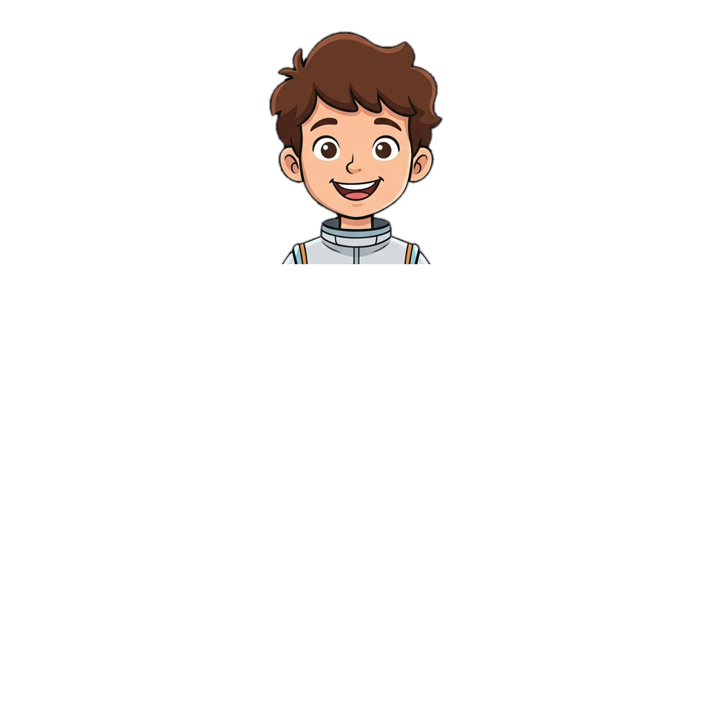
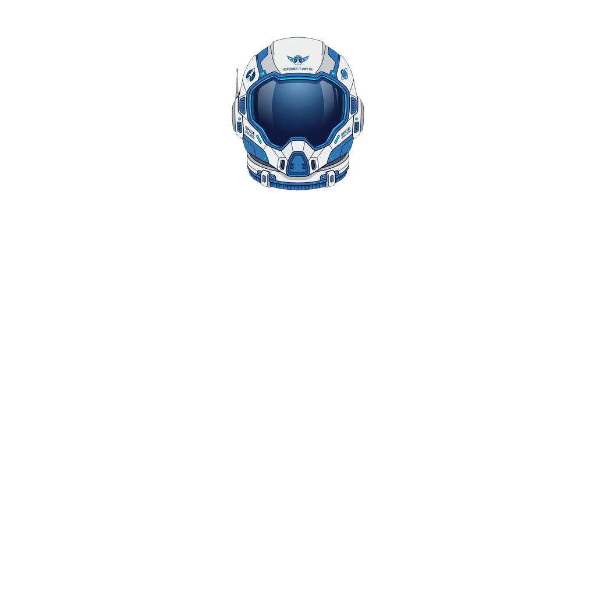
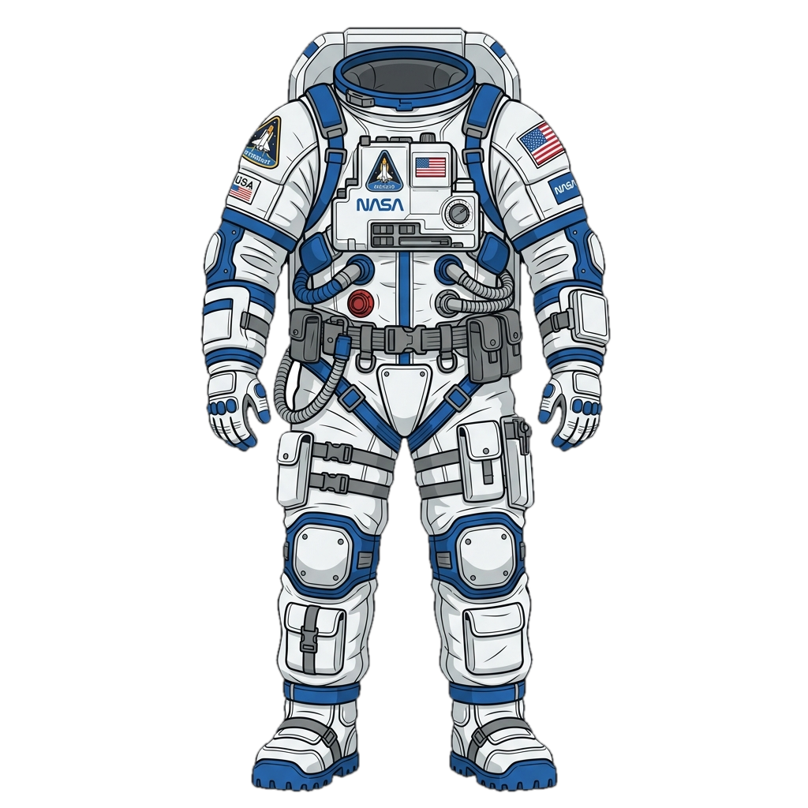
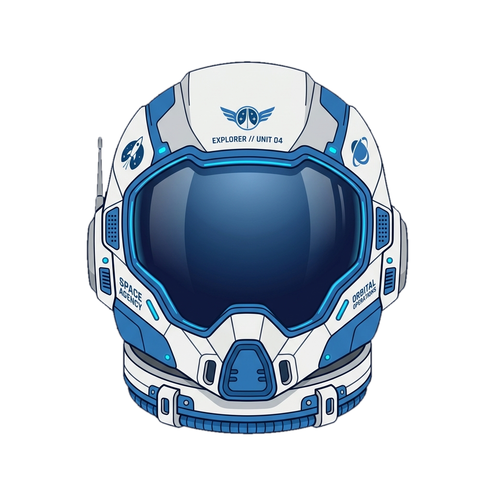

Kehidupan Seorang Astronot
Siap untuk menjelajahi luar angkasa?
Fase Persiapan: Latihan Fisik
Sebelum berangkat, astronot harus berlatih keras. Mereka berlatih di kolam air besar (NBL) untuk menyimulasikan gravitasi nol, dan di mesin sentrifugal untuk membiasakan diri dengan tekanan G-Force!

Simulasi Air
Latihan berjam-jam di bawah air menggunakan baju astronot lengkap agar terbiasa dengan gaya berat angkat.
▶ Klik untuk lihat video

Sentrifugal
Diputar dengan sangat cepat untuk menahan tekanan peluncuran roket.
▶ Klik untuk lihat video
Fase Persiapan: Baju Astronot
Tarik (Drag) Baju dan Helm ke Astronot untuk memakaikannya!






Fase Peluncuran: Menuju Luar Angkasa
Roket membutuhkan tenaga besar untuk melawan gravitasi Bumi. Saat meluncur, astronot merasakan tekanan kuat yang disebut G-Force.
Tarik roket ke atas untuk meluncurkannya!
Fase Operasional: Hidup di Luar Angkasa
Selamat datang di ISS! Gravitasi nol membuat semuanya melayang.
Klik ikon yang melayang untuk melihat video kegiatannya!